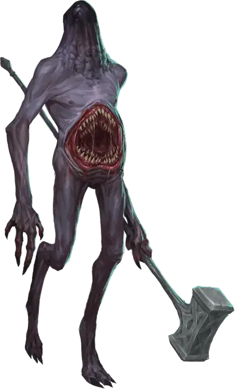

Могильный бурильщик
Tomb Tapper
Огромный Конструкт, законно-злой

Класс Доспеха 17 (природный доспех)
Хиты 207 (18к12 + 90)
Скорость 30 футов, копая 10 футов
| мод | спас | ||
|---|---|---|---|
| СИЛ | 22 | +6 | +6 |
| ЛОВ | 10 | +0 | +0 |
| ТЕЛ | 21 | +5 | +5 |
| мод | спас | ||
|---|---|---|---|
| ИНТ | 14 | +2 | +2 |
| МДР | 14 | +2 | +2 |
| ХАР | 11 | +0 | +0 |
Навыки Восприятие +6
Сопротивление урону электричество
Иммунитет к урону огонь, холод
Иммунитет к состояниям испуг, очарование
Чувства слепое зрение 240 футов (слеп за пределами этого радиуса), пассивное Восприятие 16
Языки понимает Общий и Подземный, но не говорит, Телепатия 60 фт.
Опасность 10 (5900 опыта)
Бонус мастерства +4
Особенности
Окаменение при смерти. Могильный бурильщик, хиты которого опускаются до 0, превращается в безжизненную каменную статую. В камень не трансформируется всё, что он несёт и носит.
Чувство магии. Могильный бурильщик чувствует магию в пределах 30 футов и может действием определить местоположение излучающего магию существа, объекта или области в пределах этого радиуса. Это чувство проникает сквозь любые барьеры, но может быть остановлено тонким листом свинца.
Прокладывание туннеля. Могильный бурильщик может копать сквозь сплошной камень со скоростью копания, уменьшенной вдвое, оставляя за собой туннель шириной 10 футов и высотой 20 футов.
Необычная природа. Могильный бурильщик не нуждается в воздухе и сне.
Действия
Мультиатака. Могильный бурильщик совершает две рукопашные атаки кувалдой или когтями. Если он попадает по одному существу обоими своими атаками когтями, он может подтащить это существо к своему рту и совершить по нему атаку укусом.
Укус. . Рукопашная атака оружием: +10 к попаданию, досягаемость 5 фт., одна цель. Попадание: 22 (3к10 + 6) рубящего урона.
Коготь. . Рукопашная атака оружием: +10 к попаданию, досягаемость 10 фт., одна цель. Попадание: 16 (3к6 + 6) рубящего урона.
Кувалда. . Рукопашная или дальнобойная атака оружием: +10 к попаданию, досягаемость 15 фт., или дистанция 30/120 фт., одна цель. Попадание: 27 (6к6 +6) дробящего или урона силовым полем (по выбору могильного бурильщика). В случае бросания кувалды на расстояние она возвращается в руку могильного бурильщика в конце его хода или приземляясь у ног если его руки будут заняты.
Описание
Нетерильские волшебники, создавшие этих существ, называли их «талууд», что означает «безликие». Созданные слиянием магии и элементальной земли, каждый из этих бесполых и лишенных волос воинов ростом от 15 до 21 футов обладает жаждой магии, унаследованной памятью (состоящей из воспоминаний душ, принесенных в жертву при их создании) и безумной ненавистью к нечеловеческим магическим существам. Могильные бурильщики могут копать землю и камни своими когтями или пробиваться сквозь скалы используя свою металлическую кувалду, когда это необходимо. Они впитывают кожей воду и крошат челюстями камни, добывая минеральные вещества. Они также могут усваивать железо из крови и костного мозга, если им недоступна более богатая минералами порода.
Нетерильцы посылали талуудов в Подземье для уничтожения своих врагов, в первую очередь пожирающих магию воронкоподобных существ, известных как фаэриммы. Другие существа, которым противостояли талууды, включали в себя свежевателей разума, дерро, дроу и дуэргаров. Могильные бурильщики общаются друг с другом с помощью гудящих звуков, создаваемых вибрацией их кожи.
Ищущие магию. Могильные бурильщики получили такое название из-за их пристрастия прорываться в глубины земных недр для нахождения гробниц, храмов и пещер в поисках магических предметов, которые они забирают с собой. Обычно они также пытаются завладеть всей магией у встреченных ими существ.
Магия священна для могильных бурильщиков. Они не используют найденные ими магические предметы, а защищают их и почитают словно святилища. Могильные бурильщики проводят свои долгие жизни в поисках источника всей магии, который, как они полагают, скрыт глубоко в Подземье. Они благоговеют перед элементалями земли, полагая, что они произошли непосредственно из этого источника, и нападают на них крайне неохотно.